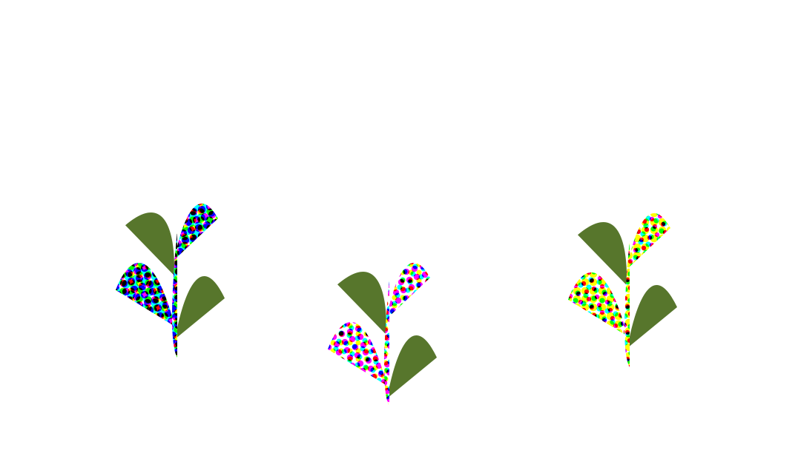
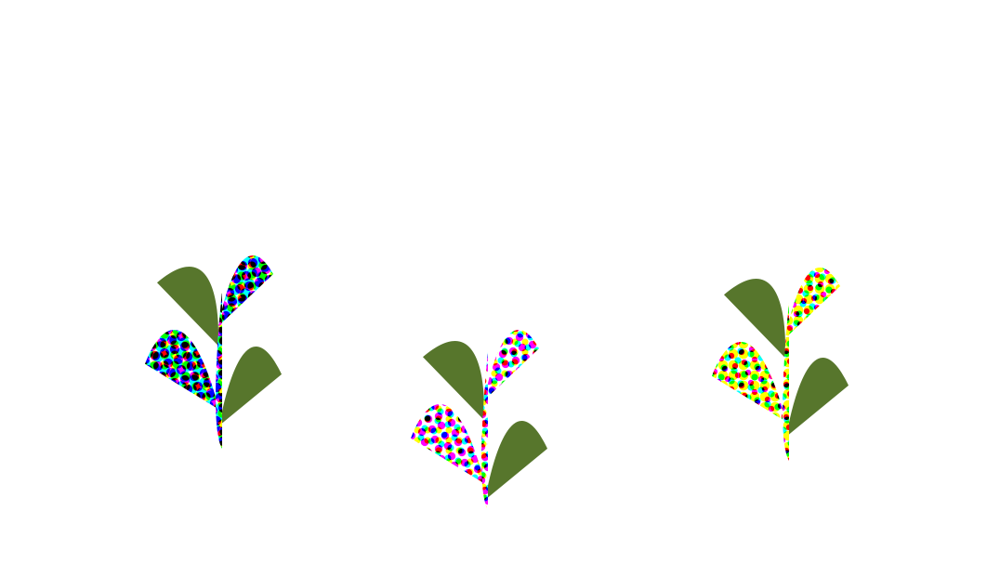
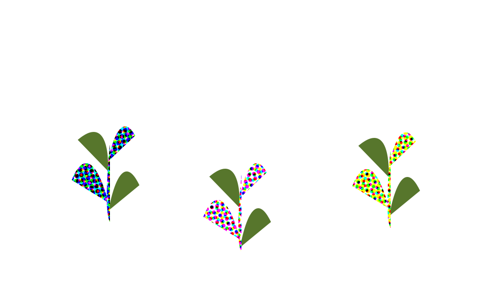
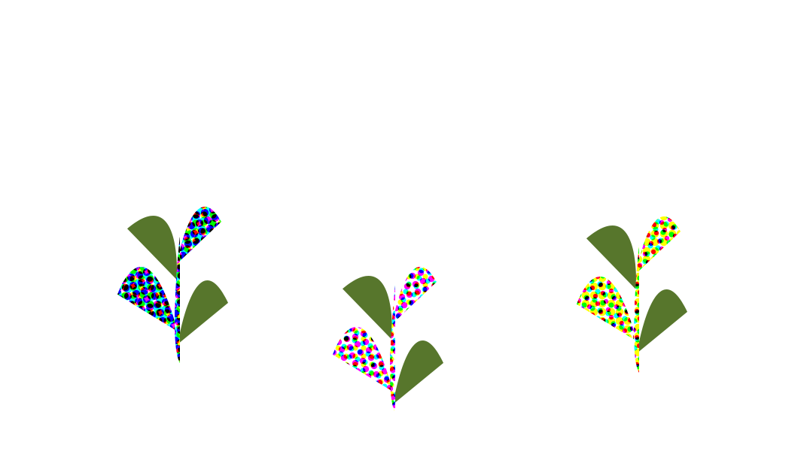

 

The concept of this portfolio was mocked up on figma. Concept evolved through iteration. (However, website is currently not mobile-friendly.)
Logo was designed based on my middle name "Wang" in Chinese characters. Embodies a more naturalistic design by "growing" into a tulip. Furthermore, the tulip is also modeled to resemble a crown once it's done growing to play on the character's meaning: "king".
Code for this website can be found here.

A poster that was created to represent ITP’s 2022 Winter Show. Aimed to represent topics like physicality, connectedness, shared space, and celebration. Focused on creating a more humanistic interpretation NYU’s ITP program.
Ghost "frame" built for physical computation midterm. Designed with Aseprite and coded with Arduino (using the Adafruit_SSD1306 and Adafruit_GFX library). Uses an Adafruit OLED and an Arduino uno. Was implemented into a "haunted" doll house that I worked on with Anvay Kantak.